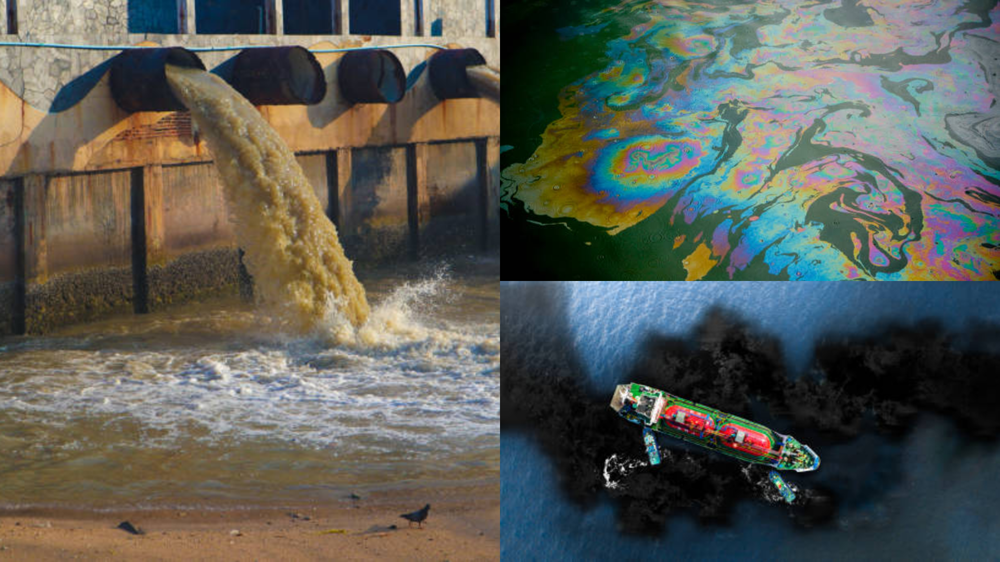
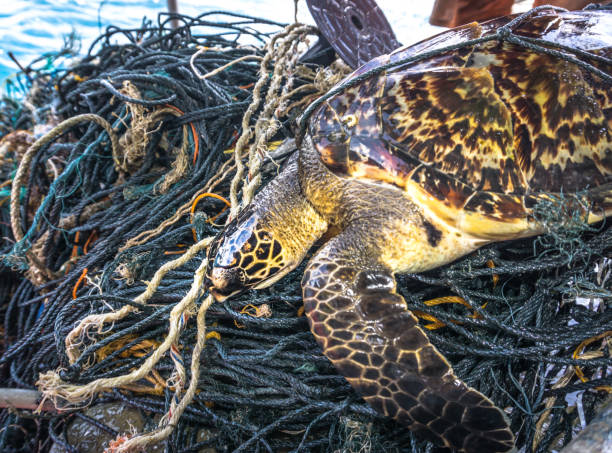
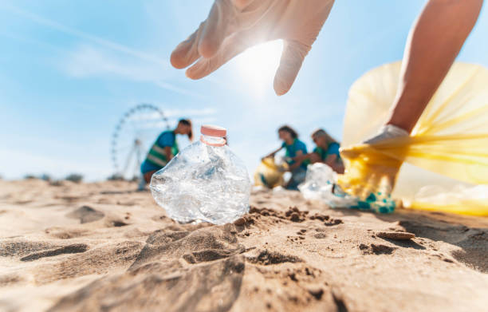

Pollution of Ocean
Learn about the pollution methods and solutions to protect sea life.
Introduction
Underwater pollution contaminates oceans, seas, rivers, and lakes, harming marine life and ecosystems. Since oceans cover over 70% of the Earth and regulate climate, pollution disrupts this balance, threatening both marine and human life.
Save Our Ocean
Types of Water Pollution Affecting Marine Life
- Plastic Pollution
- Plastic debris (bottles, bags, fishing nets) takes hundreds of years to degrade.
- Microplastics (tiny plastic particles) enter the food chain when consumed by marine organisms.
- Marine animals, such as turtles and seabirds, mistakenly ingest plastic, leading to choking, poisoning, and death.
- "Ghost fishing" occurs when abandoned fishing nets trap marine life.
- Radioactive Pollution
- Dumping of nuclear waste and radioactive leaks from power plants can introduce harmful radiation into marine ecosystems.
- Example: The Fukushima nuclear disaster (2011) led to radioactive materials contaminating Pacific Ocean waters, affecting fish populations.
Effects of Pollution on Marine Life
- Coral Bleaching and Reef Destruction
- Warmer temperatures and chemical pollution weaken coral reefs, which support 25% of marine species.
- Example: The Great Barrier Reef Marine Park in Australia regulates fishing and tourism to safeguard biodiversity.
- Toxicity in Fish and the Food Chain
- Heavy metals like mercury accumulate in fish and pass up the food chain to humans.
- Consumption of contaminated seafood can cause neurological and developmental disorders in humans.
- Endangerment of Marine Species
- Many marine animals, including sea turtles, whales, and dolphins, are at risk due to pollution.
- Plastic waste and fishing gear entangle and suffocate marine animals.
- Disruption of Marine Ecosystems
- Pollutants disrupt predator-prey relationships and food webs.
- Invasive algae and toxic species thrive due to pollution, outcompeting native species.
Solutions and Preventive Measures
- Beach cleanups: Volunteers participating in beach cleanup activities.
- Marine life conservation efforts: Conservation groups rescuing animals or restoring coral reefs.
- Innovative ocean cleanup technologies: Images of devices like the Ocean Cleanup Project working in the sea to remove plastic.
- Plastic Waste: Mismanaged waste from households and industries ends up in oceans.
- Wastewater Discharge: Untreated sewage introduces harmful bacteria, viruses, and pharmaceuticals.
Further Reading
If you're interested in learning more about methods of pollution, check out the following resources: